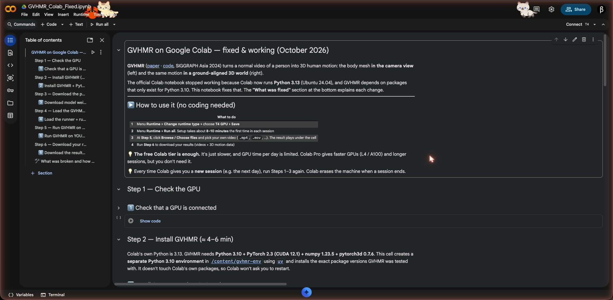
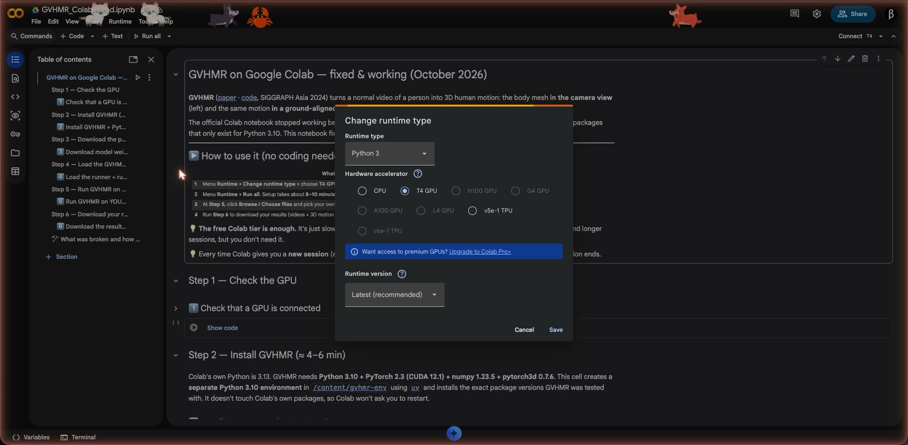
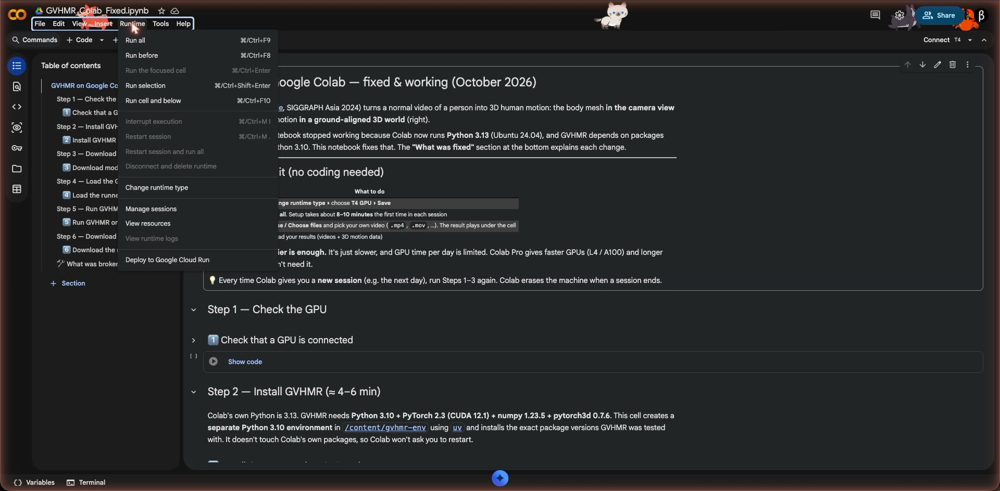
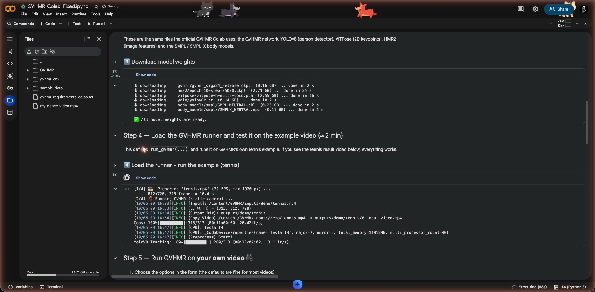
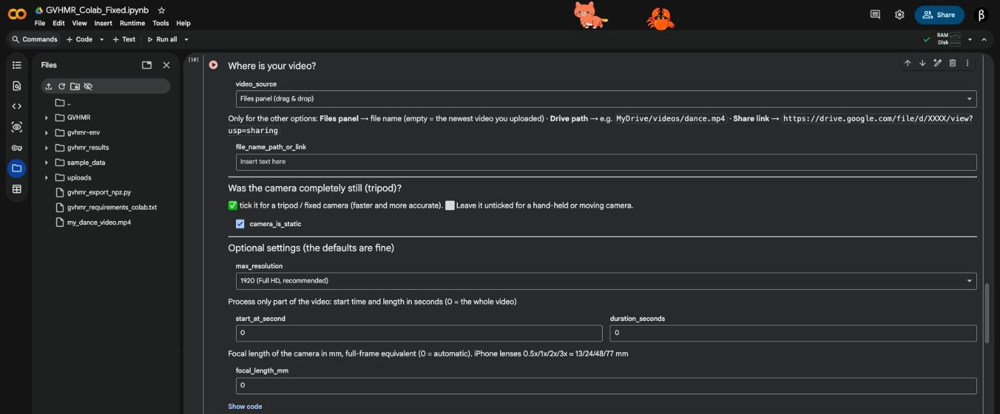
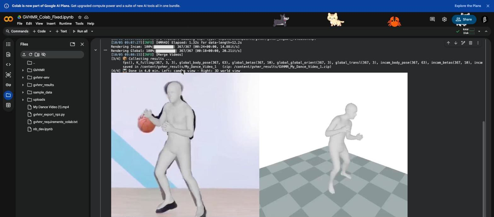

Option A, the link: open colab.research.google.com/drive/1602LWS17navgdCqaXTpAyainJKZbYKLd, then click File ▸ Save a copy in Drive, so you have your own copy to run and edit.
Option B, the file: go to colab.research.google.com ▸ Upload notebook (or File ▸ Upload notebook) ▸ choose GVHMR_Colab_Fixed.ipynb.

Menu Runtime ▸ Change runtime type ▸ select T4 GPU ▸ Save. (The notebook is already set to T4, so this is just a check.)

Menu Runtime ▸ Run all. If Colab shows "Warning: This notebook was not authored by Google", click Run anyway. That's normal for any notebook you get from someone else.

Steps 1–4 now run by themselves (≈ 8–10 min on the free T4):

You can add your video in two easy ways:
video_source on "Upload from my computer". When Step 5 runs, a Choose files button appears under the cell. Click it and pick your MP4.video_source to "Files panel (drag & drop)".
my_dance_video.mp4) uploaded to the Files panel and selected in the Step 5 form.camera_is_static: tick it if the camera was on a tripod / not moving (faster, more accurate). Leave it unticked for hand-held or moving phone videos; GVHMR then estimates the camera motion.
Then press ▶ on the Step 5 cell (or it runs automatically as part of Run all). A 10-second clip takes about 3–4 minutes on the free T4.

Press ▶ on Step 6. A GVHMR_<name>.zip file downloads. Tick also_save_to_google_drive to keep a copy in My Drive ▸ GVHMR_results.
| File in the zip | What it is |
|---|---|
<name>_side_by_side.mp4 | Camera view + 3D world view side by side |
<name>_incam.mp4 | 3D body drawn on top of your video |
<name>_global.mp4 | The motion in a 3D world with a ground plane |
<name>_smplx_params.npz | The 3D motion as numbers (SMPL-X pose, shape, rotation, translation per frame at 30 FPS). Use it in Blender, Unity or your own code |
<name>_hmr4d_results.pt | GVHMR's raw output (PyTorch) |
<name>_log.txt | Full processing log |
The official notebook (and pip install -r requirements.txt) fails on today's Colab. I reproduced the failure on a fresh Colab machine:
ERROR: pytorch3d-0.7.6-cp310-cp310-linux_x86_64.whl is not a supported wheel on this platform.ERROR: No matching distribution found for torch==2.3.0+cu121ModuleNotFoundError: No module named 'pytorch_lightning'| # | Problem | Fix |
|---|---|---|
| 1 | Colab moved to Python 3.13 (Ubuntu 24.04). GVHMR was built for Python 3.10: its pinned torch 2.3.0, numpy 1.23.5 and the pytorch3d wheel don't exist for Python 3.13, so nothing gets installed. | The notebook creates a separate Python 3.10 environment (with uv) and runs GVHMR with it. Colab's own Python is left alone, so no "restart session" prompts. |
| 2 | chumpy can't be installed by modern pip/uv: its setup.py imports pip and uses distutils. chumpy is required to read the SMPL body model. | Installed with --no-build-isolation inside the Python 3.10 environment. |
| 3 | Unpinned packages drifted. setuptools>=68 now installs v84, which removed pkg_resources, so import pytorch_lightning crashes (Lightning 2.3 needs it). Other packages (pycolmap, opencv, …) are unpinned too. | All 119 packages pinned to versions that work together (e.g. setuptools 80.9, pycolmap 3.11.1, pytorch-lightning 2.3.0). GVHMR's code is pinned to commit ee960bb, so future GitHub changes can't break the notebook. |
| 4 | Colab's environment leaks in: PYTHONPATH points to Colab's Python 3.13 packages, and MPLBACKEND to a plotting backend that doesn't exist in the 3.10 environment. | GVHMR runs with a clean environment (no PYTHONPATH, MPLBACKEND=Agg, only the GPU driver library path). |
| 5 | Custom videos were hard: only a Google Drive share link was supported. File names with spaces/brackets break GVHMR's config. 60 FPS phone videos were processed as 30 FPS (wrong speed), and 4K videos run out of memory. | Upload button, Files-panel drag & drop, Drive path or share link. Names are cleaned automatically. Videos are converted to 30 FPS (what GVHMR expects), phone rotation is applied, resolution is capped at 1920 px, and you can process just part of a video. |
| 6 | Re-running a video silently reused old cached results. | Each run starts fresh. |
| 7 | Large result videos embedded in the notebook could freeze the browser. No easy way to export the 3D motion. | Light preview in the notebook, plus one-click zip download (videos + .npz motion data), optional Google Drive copy and clear error messages. |
| Situation | What to do |
|---|---|
| "No GPU found" | Runtime ▸ Change runtime type ▸ T4 GPU ▸ Save, then Runtime ▸ Run all. |
| "Cannot connect to GPU backend" | The free daily GPU quota is used up. Try again later (usually a few hours), or use Colab Pro. |
| Out of memory | In Step 5 set duration_seconds (e.g. 30) or max_resolution = 1280. |
| No person detected / wrong person | GVHMR follows one person: the one who is biggest and visible the longest. Trim or crop the video so that person dominates. |
| Best quality | Whole body visible, person not tiny in the frame, good light. Tick camera_is_static only for tripod shots. |
| Do I need Colab Pro? | No. The free T4 works (as shown in the video). Pro gives faster GPUs (L4/A100), longer sessions and more GPU time per day. |
| How long does it take? | Setup ≈ 8–10 min per session. Then roughly 3–4 min for a 10 s clip and 10–15 min for a 60 s clip on the free T4. |
GVHMR is free for non-commercial research and education (see its LICENSE); commercial use requires permission from the authors (Zhejiang University). The SMPL / SMPL-X body models are also non-commercial and require registration at smpl.is.tue.mpg.de and smpl-x.is.tue.mpg.de. The notebook downloads the model files from the same Hugging Face mirror the official GVHMR Colab uses.